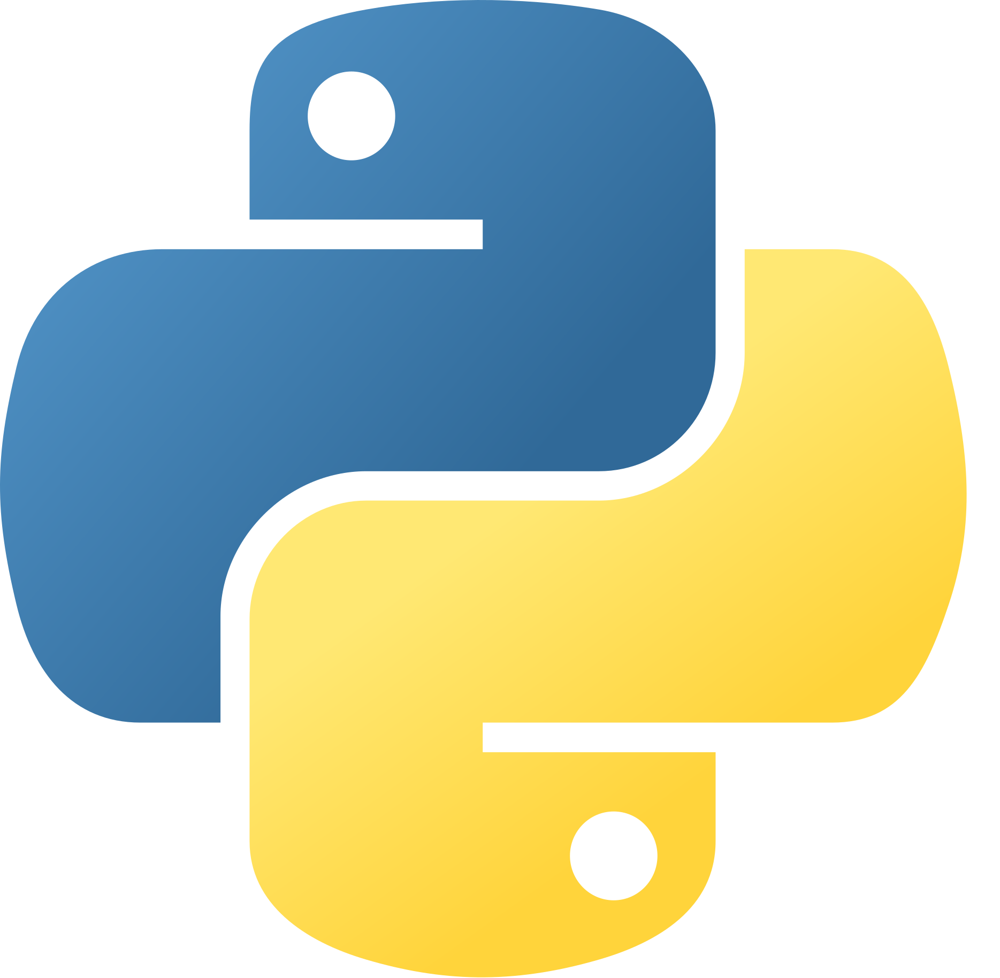

Tools and Dependancies
BME680
The BME680 is the center of the project. It is a 4-in-1 sensor that measures temperature, humidity, pressure, and gas. We use the values read by the sensor to uniquely identify the scents.
The BME680 is the center of the project. It is a 4-in-1 sensor that measures temperature, humidity, pressure, and gas. We use the values read by the sensor to uniquely identify the scents.

Olfactometer
OWidgets' olfactometer is a custom-built device that is used to deliver the scents to the user. Providing short-duration scent stimuli, each of its 6 channels can be electronically activated - carrying a range of scents through an easily cleanable and replaceable cartridge.
OWidgets' olfactometer is a custom-built device that is used to deliver the scents to the user. Providing short-duration scent stimuli, each of its 6 channels can be electronically activated - carrying a range of scents through an easily cleanable and replaceable cartridge.

Raspberry PI
The Raspberry PI microcontroller is used to control everything in the system, from the Olfactometer to the BME680 sensor, and also to run the web server which hosts the interface to access the system.
The Raspberry PI microcontroller is used to control everything in the system, from the Olfactometer to the BME680 sensor, and also to run the web server which hosts the interface to access the system.

Python
Python is the main programming language used in the project. It is used to control the hardware and to run the web server, on the raspberry pi.
Python is the main programming language used in the project. It is used to control the hardware and to run the web server, on the raspberry pi.

Flask
Flask is a micro web framework written in Python. It is used to host the web server that provides the interface to access the system.
Flask is a micro web framework written in Python. It is used to host the web server that provides the interface to access the system.

TsFresh
TsFresh is a python library that is used to extract features from time series data. We use it to extract features from the sensor data.
TsFresh is a python library that is used to extract features from time series data. We use it to extract features from the sensor data.
Hardware Implementation
In our project, we've integrated the BME680 gas sensor for scent detection and OWidgets' Olfactometer for scent emission. Both hardware components are connected to a Raspberry Pi, serving as the central control unit. This setup ensures synchronous operation, enabling accurate detection and emission of scents in our system.
BME680 Sensor
The BME680 gas sensor is connected to the Raspberry Pi as shown in the following pinout diagram. All operations to and from the sensor are handled using the
Olfactometer
In our setup, the olfactometer is directly linked to the Raspberry Pi via the USB port, establishing a seamless connection for communication. The exact port is defined in
Integration of Olfactometer and Sensor
In our system architecture, both the Ow06 and SensorLogger classes operate synchronously, adhering to a predefined schedule orchestrated within the DataSynthesizer class, found in main.py. This class serves as the central control unit for managing the interaction between the olfactometer and sensor logging functionalities. To ensure streamlined operation, crucial setup parameters and constants are stored in the setUp/constants.py file. Here, essential variables such as file paths, olfactometer port configurations, gas profile settings, and other options are defined for easy access and maintenance. The run method within the DataSynthesizer class stands as the key method of the system. This method orchestrates the execution of both the Ow06 and SensorLogger classes according to the specified schedule. Leveraging the constants provided in the constants.py file, the run method initializes necessary configurations and parameters, ensuring seamless operation of the system components.
BME680 Sensor
The BME680 gas sensor is connected to the Raspberry Pi as shown in the following pinout diagram. All operations to and from the sensor are handled using the
SensorLogger class defined in sensor.py.
01 02 03 04 05 06 07 08 09 10 11 12 13 14 15 16 17 18 19 20 21 22 23 24 25 26 27 28 29 30 31 32 33 | class SensorLogger: def __init__( self, heater_temp_array: list[int], heater_duration_array: int, ): """Initializes sensor instance Arguments: heater_temp_array -- an array of 10 temp in C heater_duration_array -- an array of duration for each temp in ms """ # Initialize sensor with primary address, if that fails, use secondary address try: self.sensor = bme680.BME680(bme680.I2C_ADDR_PRIMARY) except (RuntimeError, IOError): self.sensor = bme680.BME680(bme680.I2C_ADDR_SECONDARY) # Set sensor settings self.sensor.set_humidity_oversample(bme680.OS_2X) self.sensor.set_pressure_oversample(bme680.OS_4X) self.sensor.set_temperature_oversample(bme680.OS_8X) self.sensor.set_filter(bme680.FILTER_SIZE_3) self.sensor.set_gas_status(bme680.ENABLE_GAS_MEAS) # Data structure to store data points # session_data = [[elapsed_time, temp, pressure, humidity, heater_idx, heater_temp, heater_dur, resistance]] self.session_data = [] self.heater_temp_array = heater_temp_array self.heater_duration_array = heater_duration_array self.heater_prof_len = len(heater_temp_array) self.globals = Globals() |
class SensorLogger:
def __init__(
self,
heater_temp_array: list[int],
heater_duration_array: int,
):
"""Initializes sensor instance
Arguments:
heater_temp_array -- an array of 10 temp in C
heater_duration_array -- an array of duration for each temp in ms
"""
# Initialize sensor with primary address, if that fails, use secondary address
try:
self.sensor = bme680.BME680(bme680.I2C_ADDR_PRIMARY)
except (RuntimeError, IOError):
self.sensor = bme680.BME680(bme680.I2C_ADDR_SECONDARY)
# Set sensor settings
self.sensor.set_humidity_oversample(bme680.OS_2X)
self.sensor.set_pressure_oversample(bme680.OS_4X)
self.sensor.set_temperature_oversample(bme680.OS_8X)
self.sensor.set_filter(bme680.FILTER_SIZE_3)
self.sensor.set_gas_status(bme680.ENABLE_GAS_MEAS)
# Data structure to store data points
# session_data = [[elapsed_time, temp, pressure, humidity, heater_idx, heater_temp, heater_dur, resistance]]
self.session_data = []
self.heater_temp_array = heater_temp_array
self.heater_duration_array = heater_duration_array
self.heater_prof_len = len(heater_temp_array)
self.globals = Globals()
The sensor operates on a schedule, and this schedule is provided to the SensorLogger in the form of arrays to the initialization method. This schedule is set to the sensor using the set_heater_profile method, that utilizes the BME680 sensor library's methods to configure the sensor.
1 2 3 4 5 6 7 8 9 | def set_heater_profile(self) -> None: """Sets gas heater array""" for i in range(self.heater_prof_len): if not self.globals.running: return self.sensor.set_gas_heater_profile( self.heater_temp_array[i], self.heater_duration_array[i], nb_profile=i ) |
def set_heater_profile(self) -> None:
"""Sets gas heater array"""
for i in range(self.heater_prof_len):
if not self.globals.running: return
self.sensor.set_gas_heater_profile(
self.heater_temp_array[i], self.heater_duration_array[i], nb_profile=i
)
Next, the get_data_point method gets a data point from the sensor for each heater temperature specified in the schedule, in the format: [data_idx, elaspsed_time, temp, pressure, humidity, heater_idx, heater_temp, heating_dur, resistance]. Each data point is appended to the self.session_data attribute. The globals variable here is updated with the most recent reading to allow for live monitoring on the front-end (more on that later).
01 02 03 04 05 06 07 08 09 10 11 12 13 14 15 16 17 18 19 20 21 22 23 24 25 26 27 28 29 30 31 32 33 34 35 36 37 38 39 40 41 42 43 44 45 46 47 48 49 50 51 52 53 54 55 56 57 58 59 60 61 62 63 64 65 66 67 68 69 70 71 72 73 74 75 76 77 78 79 80 81 82 | def get_data_point(self, elapsed_time: float, data_point_idx: int) -> None: """Requests and returns 10 data points of each 1 TPH and 1 gas resistance Arguments: elapsed_time {float} -- time from which function was called data_point_idx {int} -- the index of the current data point, all readings for a temp array are assigned a shared data point """ print(f"Data point: {data_point_idx}, Time: {round(elapsed_time, 2)}.") start_time = time.time() # Reset temp array self.set_heater_profile() # Initialize TPH reading used for all 10 gas readings tph = [] # Each data point in the format of [data_idx, elaspsed_time, temp, pressure, humidity, heater_idx, heater_temp, heating_dur, resistance] for heater_idx in range(len(self.heater_temp_array)): if not self.globals.running: return self.sensor.select_gas_heater_profile(heater_idx) if self.sensor.get_sensor_data(): # Only save the first TPH for a gas heater cycle, or tph empty if heater_idx == 0 or len(tph) == 0: cpu_temp = self.get_cpu_temperature() # TPH reading tph.extend( [ round(self.sensor.data.temperature, 2), round(self.sensor.data.pressure, 2), round(self.sensor.data.humidity, 2), ] ) if heater_idx == 0: print(f"Temp: {tph[0]} C, Pres: {tph[1]} hPa, Hum: {tph[2]} %RH, CPU Temp: {cpu_temp} C") # Wait for heater to stabilize with the heater duration in ms (minus 30ms to reach given temp) time.sleep((self.heater_duration_array[heater_idx] - 30) * 0.001) timestamp = round(elapsed_time + time.time() - start_time, 2) data_point = [data_point_idx, timestamp] # Gas reading heater_temp = self.heater_temp_array[heater_idx] heater_duration = self.heater_duration_array[heater_idx] if self.sensor.data.heat_stable: gas_resistance = round(self.sensor.data.gas_resistance, 2) data_point.extend( tph + [ heater_idx, heater_temp, heater_duration, gas_resistance, ] ) print(f"Dur: {heater_duration}, HT: {heater_temp}, GR: {gas_resistance} Ohms") else: # Still keep the data point array to length of 7 data_point.extend(tph + [heater_idx, None, None, None]) print( f"Missed a reading for gas profile index {heater_idx}: {heater_temp} C, {heater_duration}ms" ) self.globals.update_latest(time.time(), data_point) self.session_data.append(data_point) # If sensor failed to return data else: print("Failed to get sensor data.") print("\n") |
def get_data_point(self, elapsed_time: float, data_point_idx: int) -> None:
"""Requests and returns 10 data points of each 1 TPH and 1 gas resistance
Arguments:
elapsed_time {float} -- time from which function was called
data_point_idx {int} -- the index of the current data point, all readings
for a temp array are assigned a shared data point
"""
print(f"Data point: {data_point_idx}, Time: {round(elapsed_time, 2)}.")
start_time = time.time()
# Reset temp array
self.set_heater_profile()
# Initialize TPH reading used for all 10 gas readings
tph = []
# Each data point in the format of [data_idx, elaspsed_time, temp, pressure, humidity, heater_idx, heater_temp, heating_dur, resistance]
for heater_idx in range(len(self.heater_temp_array)):
if not self.globals.running: return
self.sensor.select_gas_heater_profile(heater_idx)
if self.sensor.get_sensor_data():
# Only save the first TPH for a gas heater cycle, or tph empty
if heater_idx == 0 or len(tph) == 0:
cpu_temp = self.get_cpu_temperature()
# TPH reading
tph.extend(
[
round(self.sensor.data.temperature, 2),
round(self.sensor.data.pressure, 2),
round(self.sensor.data.humidity, 2),
]
)
if heater_idx == 0:
print(f"Temp: {tph[0]} C, Pres: {tph[1]} hPa, Hum: {tph[2]} %RH, CPU Temp: {cpu_temp} C")
# Wait for heater to stabilize with the heater duration in ms (minus 30ms to reach given temp)
time.sleep((self.heater_duration_array[heater_idx] - 30) * 0.001)
timestamp = round(elapsed_time + time.time() - start_time, 2)
data_point = [data_point_idx, timestamp]
# Gas reading
heater_temp = self.heater_temp_array[heater_idx]
heater_duration = self.heater_duration_array[heater_idx]
if self.sensor.data.heat_stable:
gas_resistance = round(self.sensor.data.gas_resistance, 2)
data_point.extend(
tph
+ [
heater_idx,
heater_temp,
heater_duration,
gas_resistance,
]
)
print(f"Dur: {heater_duration}, HT: {heater_temp}, GR: {gas_resistance} Ohms")
else:
# Still keep the data point array to length of 7
data_point.extend(tph + [heater_idx, None, None, None])
print(
f"Missed a reading for gas profile index {heater_idx}: {heater_temp} C, {heater_duration}ms"
)
self.globals.update_latest(time.time(), data_point)
self.session_data.append(data_point)
# If sensor failed to return data
else:
print("Failed to get sensor data.")
print("\n")
Finally, the run method of the of class periodically calls the get_data_point method, using a variable called data_point_idx to keep track of the data points.
01 02 03 04 05 06 07 08 09 10 11 12 13 14 15 16 17 18 19 20 21 22 23 24 25 | def run(self, start_time: float, session_duration: float, sleep_time) -> None: """Records data points for a given duration Arguments: start_time -- time from which function was called session_duration -- duration for the experiment sleep_time -- time to sleep between each data point Raises: KeyboardInterrupt: if user interrupts the program """ try: elapsed_time = 0 data_point_idx = 0 while elapsed_time < session_duration: if not self.globals.running: return elapsed_time = time.time() - start_time self.get_data_point(elapsed_time, data_point_idx) data_point_idx += 1 time.sleep(sleep_time) except KeyboardInterrupt: raise KeyboardInterrupt |
def run(self, start_time: float, session_duration: float, sleep_time) -> None:
"""Records data points for a given duration
Arguments:
start_time -- time from which function was called
session_duration -- duration for the experiment
sleep_time -- time to sleep between each data point
Raises:
KeyboardInterrupt: if user interrupts the program
"""
try:
elapsed_time = 0
data_point_idx = 0
while elapsed_time < session_duration:
if not self.globals.running: return
elapsed_time = time.time() - start_time
self.get_data_point(elapsed_time, data_point_idx)
data_point_idx += 1
time.sleep(sleep_time)
except KeyboardInterrupt:
raise KeyboardInterrupt
Olfactometer
In our setup, the olfactometer is directly linked to the Raspberry Pi via the USB port, establishing a seamless connection for communication. The exact port is defined in
setUp/constants.pyUtilizing a serial interface, bidirectional communication with the olfactometer is facilitated. This interaction is managed through the OW06 class within the ow06.py module. Within this class, pivotal methods such as write_com and read_com are defined to handle outgoing and incoming messages to and from the olfactometer, respectively. These methods serve as the backbone for all communication tasks, with other methods leveraging their functionality to execute various operations seamlessly.
01 02 03 04 05 06 07 08 09 10 11 12 13 14 15 16 17 18 19 20 21 22 23 24 25 26 27 28 29 30 31 32 33 34 35 36 37 38 39 40 41 42 43 44 45 46 47 48 49 50 51 52 53 54 55 56 57 | def write_com(self, msg: str) -> None: """Converting message to bytes and write it to serial port, Arguments: msg {str} -- string to write to serial port Raises: Exception: Serial errors or provided msg is empty SerialException: _description_ """ if self.connected == False: raise Exception( f"olfac: write_com - serial not connected. Have you called open_com()?" ) if msg is None or len(msg) == 0: raise Exception("olfac: write_com - msg parameter is empty") # Encoding in recommended format for serial communication msg = msg + "\n" msg = msg.encode("utf-8") if msg is None or len(msg) == 0: raise Exception("olfac: write_com - msg is empty after encoding") # Write to serial port try: self.serial.write(msg) self.serial.flush() except SerialException as e: raise SerialException( f"olfac: write_com - error while writing to serial port. Details: {e}" )def read_com(self) -> str: """Reads from serial port, decodes, and returns the first line""" if not self.connected: raise Exception( f"olfac: read_com - serial not connected. Have you called open_com()?" ) # Read from serial port line = None try: line = self.serial.readline() except Exception as e: raise Exception( f"olfac: read_com - error while reading from serial port. Details: {e}" ) # Decode and split line line = line.decode("utf-8").split() if line is None or len(line) == 0: raise Exception("olfac: read_com - line is empty after decoding") return line[0] |
def write_com(self, msg: str) -> None:
"""Converting message to bytes and write it to serial port,
Arguments:
msg {str} -- string to write to serial port
Raises:
Exception: Serial errors or provided msg is empty
SerialException: _description_
"""
if self.connected == False:
raise Exception(
f"olfac: write_com - serial not connected. Have you called open_com()?"
)
if msg is None or len(msg) == 0:
raise Exception("olfac: write_com - msg parameter is empty")
# Encoding in recommended format for serial communication
msg = msg + "\n"
msg = msg.encode("utf-8")
if msg is None or len(msg) == 0:
raise Exception("olfac: write_com - msg is empty after encoding")
# Write to serial port
try:
self.serial.write(msg)
self.serial.flush()
except SerialException as e:
raise SerialException(
f"olfac: write_com - error while writing to serial port. Details: {e}"
)
def read_com(self) -> str:
"""Reads from serial port, decodes, and returns the first line"""
if not self.connected:
raise Exception(
f"olfac: read_com - serial not connected. Have you called open_com()?"
)
# Read from serial port
line = None
try:
line = self.serial.readline()
except Exception as e:
raise Exception(
f"olfac: read_com - error while reading from serial port. Details: {e}"
)
# Decode and split line
line = line.decode("utf-8").split()
if line is None or len(line) == 0:
raise Exception("olfac: read_com - line is empty after decoding")
return line[0]
There are a set number of commands that can be sent to the olfactometer via the serial interface. These commands are used to control the olfactometer and are sent by the Ow06 class. The commands are as follows:
CHAN <chan_id> :STAT ON- Turns on channel <chan_id>CHAN <chan_id> :STAT OFF- Turns off channel <chan_id>CHAN <chan_id> :STAT?- Gets status of channel <chan_id> (True / False)
Integration of Olfactometer and Sensor
In our system architecture, both the Ow06 and SensorLogger classes operate synchronously, adhering to a predefined schedule orchestrated within the DataSynthesizer class, found in main.py. This class serves as the central control unit for managing the interaction between the olfactometer and sensor logging functionalities. To ensure streamlined operation, crucial setup parameters and constants are stored in the setUp/constants.py file. Here, essential variables such as file paths, olfactometer port configurations, gas profile settings, and other options are defined for easy access and maintenance. The run method within the DataSynthesizer class stands as the key method of the system. This method orchestrates the execution of both the Ow06 and SensorLogger classes according to the specified schedule. Leveraging the constants provided in the constants.py file, the run method initializes necessary configurations and parameters, ensuring seamless operation of the system components.
01 02 03 04 05 06 07 08 09 10 11 12 13 14 15 16 17 18 19 20 21 22 23 24 25 26 27 28 29 30 31 32 33 34 35 36 37 38 39 40 41 42 | def run( self, heater_schedule_file_path: str, olfac_schedule_file_path: str, olfac_port: str, stabilisation_time: int, cycle_stabilisation_time: int, reading_sleep_time: float, cycle_duration: float, output_path: str, feature_extraction: bool, ) -> None: """Runs synthesizer, recording data to csv file Arguments: heater_schedule_file_path -- path to csv file containing heater schedule olfac_schedule_file_path -- path to csv file containing olfactometer schedule olfac_port -- serial port to connect to olfactometer stabilisation_time -- time to stabilise before beginning cycle cycle_stabilisation_time -- time to stabilise before each cycle reading_sleep_time -- time to wait between each reading in seconds cycle_duration -- duration of each cycle in seconds output_path -- path to output directory to create csv file feature_extraction -- boolean to enable feature extraction """ # Initialize Sensor try: self.sensor_init(file_path=heater_schedule_file_path) except Exception as e: raise Exception( f"DataSynthesizer: run - error while initializing sensor. Details: {e}" ) # read olfac schedule try: self.schedule = self.olfac_read_schedule(file_path=olfac_schedule_file_path) except Exception as e: raise Exception( f"DataSynthesizer: olfac_init - error while reading schedule. Details: {e}" ) ... |
def run(
self,
heater_schedule_file_path: str,
olfac_schedule_file_path: str,
olfac_port: str,
stabilisation_time: int,
cycle_stabilisation_time: int,
reading_sleep_time: float,
cycle_duration: float,
output_path: str,
feature_extraction: bool,
) -> None:
"""Runs synthesizer, recording data to csv file
Arguments:
heater_schedule_file_path -- path to csv file containing heater schedule
olfac_schedule_file_path -- path to csv file containing olfactometer schedule
olfac_port -- serial port to connect to olfactometer
stabilisation_time -- time to stabilise before beginning cycle
cycle_stabilisation_time -- time to stabilise before each cycle
reading_sleep_time -- time to wait between each reading in seconds
cycle_duration -- duration of each cycle in seconds
output_path -- path to output directory to create csv file
feature_extraction -- boolean to enable feature extraction
"""
# Initialize Sensor
try:
self.sensor_init(file_path=heater_schedule_file_path)
except Exception as e:
raise Exception(
f"DataSynthesizer: run - error while initializing sensor. Details: {e}"
)
# read olfac schedule
try:
self.schedule = self.olfac_read_schedule(file_path=olfac_schedule_file_path)
except Exception as e:
raise Exception(
f"DataSynthesizer: olfac_init - error while reading schedule. Details: {e}"
)
...
Then, the method goes on to read the olfactometer schedule and initialize the olfactometer. For each cycle in the schedule, the method waits for the stabilisation time, then turns on the olfactometer channels according to the schedule, followed by the sensor. The olfactometer runs on a thread, so that both the sensor and the olfactometer can run synchronously. It then waits for the cycle stabilisation time before turning off the channels and waiting for the next cycle.
042 043 044 045 046 047 048 049 050 051 052 053 054 055 056 057 058 059 060 061 062 063 064 065 066 067 068 069 070 071 072 073 074 075 076 077 078 079 080 081 082 083 084 085 086 087 088 089 090 091 092 093 094 095 096 097 098 099 100 101 102 103 104 105 106 107 108 109 110 111 112 113 114 115 116 117 118 119 120 121 122 123 124 125 126 127 128 129 130 131 132 133 134 135 136 137 138 139 | ... # Run schedule for cycle in self.schedule: if not self.globals.running: self.olfactometer.close_com() return stabilisation_time = 0 # Stabilise, usually only for very first round after sensor inactive for a few hours if stabilisation_time > 0: try: start_time = time.time() self.sensor_logger.run( start_time=start_time, session_duration=stabilisation_time, sleep_time=reading_sleep_time, ) self.sensor_logger.session_data = [] except Exception as e: raise Exception( f"DataSynthesizer: run - error while reading data. Details: {e}" ) try: channelNum, scentNum, duration = cycle # Initilize a new olfac instance for every olfactometer emission self.olfactometer = Ow06() try: self.olfactometer.open_com(olfac_port) except Exception as e: raise Exception( f"DataSynthesizer: run - error while opening olfac serial port. Details: {e}" ) # Note the datatime date_time = datetime.now() date_time = date_time.strftime("%Y-%m-%d-%H-%M-%S") # CYCLE STABILISATION if cycle_stabilisation_time > 0: try: start_time = time.time() self.sensor_logger.run( start_time=start_time, session_duration=cycle_stabilisation_time, sleep_time=reading_sleep_time, ) stabilisation_elapsed_time = time.time() - start_time total_data_points = self.sensor_logger.session_data[-1][0] + 1 # Shift the time stamps during stabilisation by the elapsed time (resulting in negative time stamp) for data_point in self.sensor_logger.session_data: # Shifts data_point_idx data_point[0] -= total_data_points # Shifts time data_point[1] = round( data_point[1] - stabilisation_elapsed_time, 2 ) except Exception as e: raise Exception( f"DataSynthesizer: run - error while reading data. Details: {e}" ) start_time = time.time() print( f"Beginning cycle: channel {channelNum}, scent {scentNum}, duration {duration}s" ) # Enable olfactometer channel if duration > 0 and channelNum > 0 and channelNum < 7: olfac_emission = threading.Thread( target=self.olfac_emission, args=(channelNum, duration), daemon=True, ) olfac_emission.start() else: olfac_emission = None # Read data try: self.sensor_logger.run( start_time=start_time, session_duration=cycle_duration, sleep_time=reading_sleep_time, ) except Exception as e: raise Exception( f"DataSynthesizer: run - error while reading data. Details: {e}" )... |
...
# Run schedule
for cycle in self.schedule:
if not self.globals.running:
self.olfactometer.close_com()
return
stabilisation_time = 0
# Stabilise, usually only for very first round after sensor inactive for a few hours
if stabilisation_time > 0:
try:
start_time = time.time()
self.sensor_logger.run(
start_time=start_time,
session_duration=stabilisation_time,
sleep_time=reading_sleep_time,
)
self.sensor_logger.session_data = []
except Exception as e:
raise Exception(
f"DataSynthesizer: run - error while reading data. Details: {e}"
)
try:
channelNum, scentNum, duration = cycle
# Initilize a new olfac instance for every olfactometer emission
self.olfactometer = Ow06()
try:
self.olfactometer.open_com(olfac_port)
except Exception as e:
raise Exception(
f"DataSynthesizer: run - error while opening olfac serial port. Details: {e}"
)
# Note the datatime
date_time = datetime.now()
date_time = date_time.strftime("%Y-%m-%d-%H-%M-%S")
# CYCLE STABILISATION
if cycle_stabilisation_time > 0:
try:
start_time = time.time()
self.sensor_logger.run(
start_time=start_time,
session_duration=cycle_stabilisation_time,
sleep_time=reading_sleep_time,
)
stabilisation_elapsed_time = time.time() - start_time
total_data_points = self.sensor_logger.session_data[-1][0] + 1
# Shift the time stamps during stabilisation by the elapsed time (resulting in negative time stamp)
for data_point in self.sensor_logger.session_data:
# Shifts data_point_idx
data_point[0] -= total_data_points
# Shifts time
data_point[1] = round(
data_point[1] - stabilisation_elapsed_time, 2
)
except Exception as e:
raise Exception(
f"DataSynthesizer: run - error while reading data. Details: {e}"
)
start_time = time.time()
print(
f"Beginning cycle: channel {channelNum}, scent {scentNum}, duration {duration}s"
)
# Enable olfactometer channel
if duration > 0 and channelNum > 0 and channelNum < 7:
olfac_emission = threading.Thread(
target=self.olfac_emission,
args=(channelNum, duration),
daemon=True,
)
olfac_emission.start()
else:
olfac_emission = None
# Read data
try:
self.sensor_logger.run(
start_time=start_time,
session_duration=cycle_duration,
sleep_time=reading_sleep_time,
)
except Exception as e:
raise Exception(
f"DataSynthesizer: run - error while reading data. Details: {e}"
)
...
The method also reads the sensor data at regular intervals and writes it to a CSV file. If feature extraction is enabled, the method also extracts features from the sensor data and writes them to a separate CSV file.
139 140 141 142 143 144 145 146 147 148 149 150 151 152 153 154 155 156 157 158 159 160 161 162 163 164 165 166 167 168 | ... # Write data to csv try: self.write_data_to_csv( start_time=start_time, file_name=date_time, scent_num=scentNum, output_path=output_path, feature_extraction=feature_extraction, ) except Exception as e: raise Exception( f"DataSynthesizer: run - error while writing data to csv. Details: {e}" ) # Reset session specific attributes self.sensor_logger.session_data = [] self.olfac_end_time = None print( f"Finished cycle: channel {channelNum}, scent {scentNum}, duration {duration}s" ) # heater cooldown time.sleep(10) # if there is any exception, skip and go to the next scheduled cycle except Exception as e: print(f"{cycle} failed. Details: {e}") continue |
...
# Write data to csv
try:
self.write_data_to_csv(
start_time=start_time,
file_name=date_time,
scent_num=scentNum,
output_path=output_path,
feature_extraction=feature_extraction,
)
except Exception as e:
raise Exception(
f"DataSynthesizer: run - error while writing data to csv. Details: {e}"
)
# Reset session specific attributes
self.sensor_logger.session_data = []
self.olfac_end_time = None
print(
f"Finished cycle: channel {channelNum}, scent {scentNum}, duration {duration}s"
)
# heater cooldown
time.sleep(10)
# if there is any exception, skip and go to the next scheduled cycle
except Exception as e:
print(f"{cycle} failed. Details: {e}")
continue